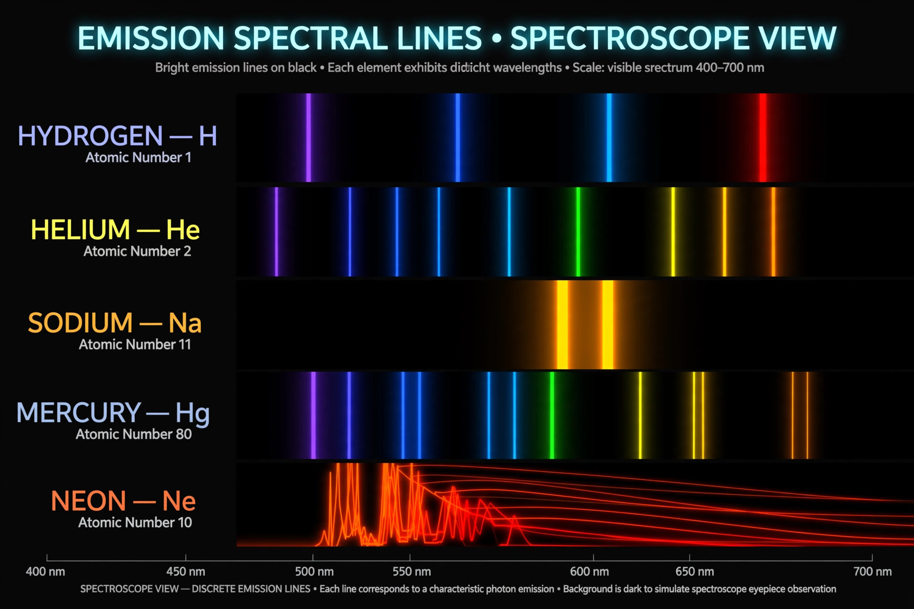

A spectral line is a dark or bright line in an otherwise uniform and continuous spectrum, resulting from emission or absorption of light in a narrow frequency range. Spectral lines arise from transitions of electrons between energy levels in atoms and molecules; because the energy levels are unique to each element, the pattern of lines acts as a "fingerprint" by which the composition of distant stars and gases can be determined — the basis of astronomical spectroscopy.
An emission line appears when electrons drop to lower energy levels and emit photons of characteristic energy; an absorption line appears when a cooler gas absorbs photons at those same energies from a hotter continuous source behind it — as in the dark Fraunhofer lines of the solar spectrum. In hydrogen, the transitions form named series: Lyman (ultraviolet), Balmer (visible) and Paschen (infrared).
Real spectral lines are never infinitely sharp. Natural broadening follows from the Heisenberg uncertainty principle; thermal (Doppler) broadening reflects the random motions of atoms; pressure or collisional broadening results from interactions between particles; and in astrophysics lines are shifted by the Doppler effect and by cosmological redshift, allowing measurement of velocities and distances. The 21-centimetre hydrogen line, caused by a hyperfine spin-flip transition, is a key tool for mapping neutral hydrogen in galaxies and for studying the early universe.